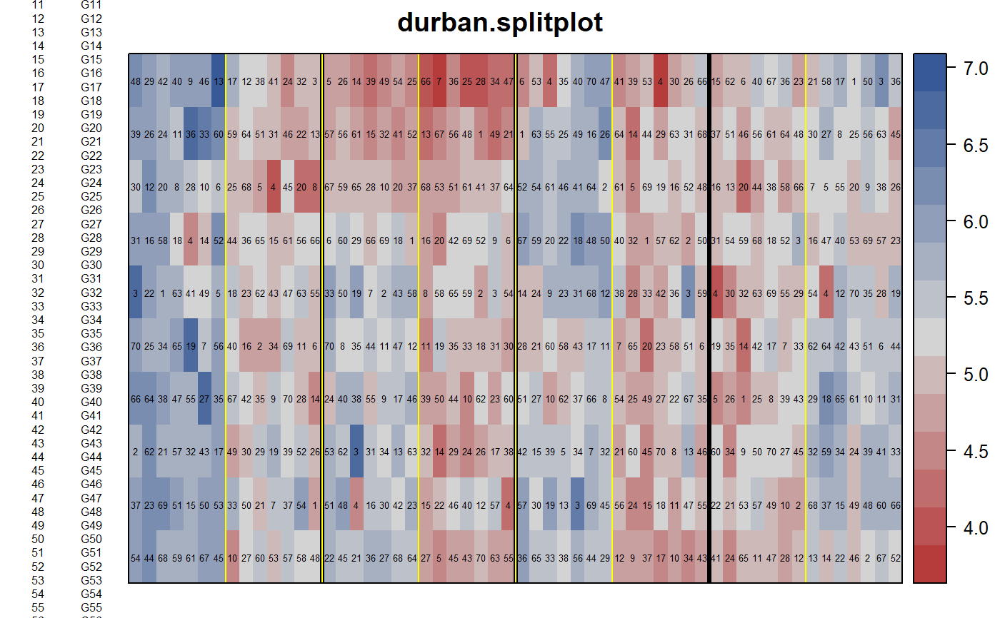
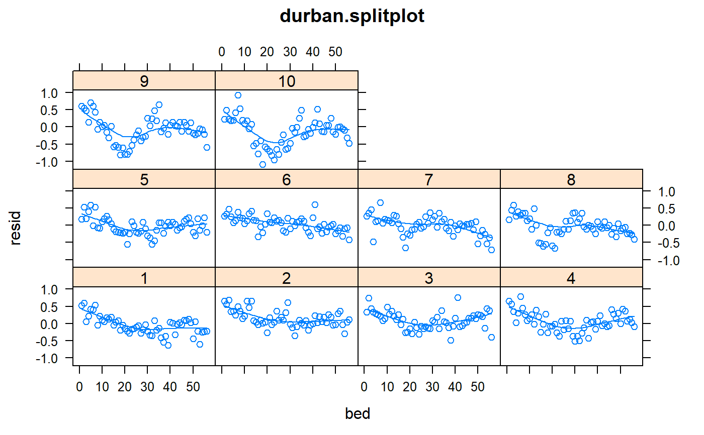
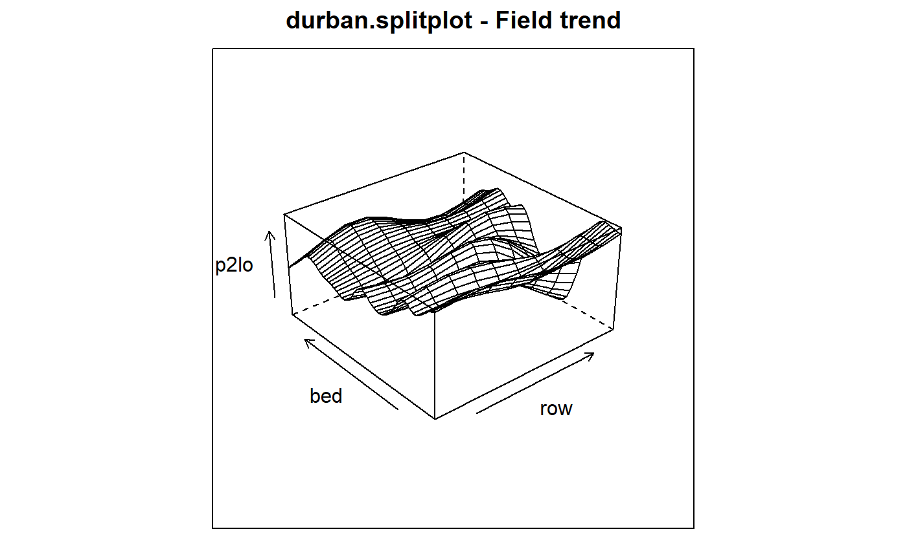

durban.splitplot.RdSplit-plot experiment of barley with fungicide treatments
A data frame with 560 observations on the following 6 variables.
yieldyield, tonnes/ha
blockblock, 4 levels
gengenotype, 70 levels
fungfungicide, 2 levels
rowrow
bedbed (column)
Grown in 1995-1996 at the Scottish Crop Research Institute. Split-plot design with 4 blocks, 2 whole-plot fungicide treatments, and 70 barley varieties or variety mixes. Total area was 10 rows (north/south) by 56 beds (east/west).
Used with permission of Maria Durban.
Durban, Maria and Hackett, Christine and McNicol, James and Newton, Adrian and Thomas, William and Currie, Iain. 2003. The practical use of semiparametric models in field trials, Journal of Agric Biological and Envir Stats, 8, 48-66. https://doi.org/10.1198/1085711031265.
# \dontrun{
library(agridat)
data(durban.splitplot)
dat <- durban.splitplot
libs(desplot)
desplot(dat, yield~bed*row,
out1=block, out2=fung, num=gen, # aspect unknown
main="durban.splitplot")

# Durban 2003, Figure 2
m20 <- lm(yield~gen + fung + gen:fung, data=dat)
dat$resid <- m20$resid
## libs(lattice)
## xyplot(resid~row, dat, type=c('p','smooth'), main="durban.splitplot")
## xyplot(resid~bed, dat, type=c('p','smooth'), main="durban.splitplot")
# Figure 4 doesn't quite match due to different break points
libs(lattice)
xyplot(resid ~ bed|factor(row), data=dat,
main="durban.splitplot",
type=c('p','smooth'))

# Figure 6 - field trend
# note, Durban used gam package like this
# m2lo <- gam(yield ~ gen*fung + lo(row, bed, span=.082), data=dat)
libs(mgcv)
m2lo <- gam(yield ~ gen*fung + s(row, bed,k=45), data=dat)
new2 <- expand.grid(row=unique(dat$row), bed=unique(dat$bed))
new2 <- cbind(new2, gen="G01", fung="F1")
p2lo <- predict(m2lo, newdata=new2)
libs(lattice)
wireframe(p2lo~row+bed, new2, aspect=c(1,.5),
main="durban.splitplot - Field trend")

libs(asreml) # asreml4
# Table 5, variance components. Table 6, F tests
dat <- transform(dat, rowf=factor(row), bedf=factor(bed))
dat <- dat[order(dat$rowf, dat$bedf),]
m2a2 <- asreml(yield ~ gen*fung, random=~block/fung+units, data=dat,
resid =~ar1v(rowf):ar1(bedf))
#> Model fitted using the sigma parameterization.
#> ASReml 4.1.0 Fri Dec 17 15:17:10 2021
#> LogLik Sigma2 DF wall cpu
#> 1 208.653 1.0 420 15:17:10 0.1 (3 restrained)
#> Log-likelihood decreased to 149.571 ; trying with reduced updates (0.757712)
#> 2 204.621 1.0 420 15:17:10 0.1
#> 3 215.185 1.0 420 15:17:10 0.0 (3 restrained)
#> 4 224.963 1.0 420 15:17:10 0.0 (2 restrained)
#> 5 231.997 1.0 420 15:17:10 0.0 (3 restrained)
#> Log-likelihood decreased to 199.331 ; trying with reduced updates (0.408715)
#> 6 234.142 1.0 420 15:17:10 0.1
#> 7 245.873 1.0 420 15:17:10 0.0
#> 8 280.158 1.0 420 15:17:10 0.0
#> 9 312.280 1.0 420 15:17:11 0.0
#> 10 328.542 1.0 420 15:17:11 0.0
#> 11 338.508 1.0 420 15:17:11 0.0
#> 12 343.036 1.0 420 15:17:11 0.0
#> 13 343.633 1.0 420 15:17:11 0.0
#> Warning: Log-likelihood not converged
#> Warning: Some components changed by more than 1% on the last iteration.
m2a2 <- update(m2a2)
#> Model fitted using the sigma parameterization.
#> ASReml 4.1.0 Fri Dec 17 15:17:11 2021
#> LogLik Sigma2 DF wall cpu
#> 1 343.701 1.0 420 15:17:11 0.1
#> 2 343.707 1.0 420 15:17:11 0.1 (1 restrained)
#> 3 343.714 1.0 420 15:17:11 0.0 (1 restrained)
#> 4 343.715 1.0 420 15:17:11 0.0 (1 restrained)
#> Warning: Some components changed by more than 1% on the last iteration.
libs(lucid)
vc(m2a2)
#> effect component std.error z.ratio bound %ch
#> block 0.0000002 NA NA B 93.7
#> block:fung 0.01209 0.01634 0.74 P 0.7
#> units 0.02463 0.002465 10 P 0
#> rowf:bedf!R 1 NA NA F 0
#> rowf:bedf!rowf!cor 0.8836 0.03721 24 U 0
#> rowf:bedf!rowf!var 0.1262 0.0452 2.8 P 0.2
#> rowf:bedf!bedf!cor 0.9202 0.02869 32 U 0
## effect component std.error z.ratio bound
## block 0 NA NA B NA
## block:fung 0.01206 0.01512 0.8 P 0
## units 0.02463 0.002465 10 P 0
## rowf:bedf(R) 1 NA NA F 0
## rowf:bedf!rowf!cor 0.8836 0.03646 24 U 0
## rowf:bedf!rowf!var 0.1261 0.04434 2.8 P 0
## rowf:bedf!bedf!cor 0.9202 0.02846 32 U 0
wald(m2a2)
#> Wald tests for fixed effects.
#> Response: yield
#> Terms added sequentially; adjusted for those above.
#>
#> Df Sum of Sq Wald statistic Pr(Chisq)
#> (Intercept) 1 1051.96 1051.96 < 2.2e-16 ***
#> gen 69 1099.59 1099.59 < 2.2e-16 ***
#> fung 1 37.04 37.04 1.156e-09 ***
#> gen:fung 69 89.64 89.64 0.04816 *
#> residual (MS) 1.00
#> ---
#> Signif. codes: 0 '***' 0.001 '**' 0.01 '*' 0.05 '.' 0.1 ' ' 1
# }